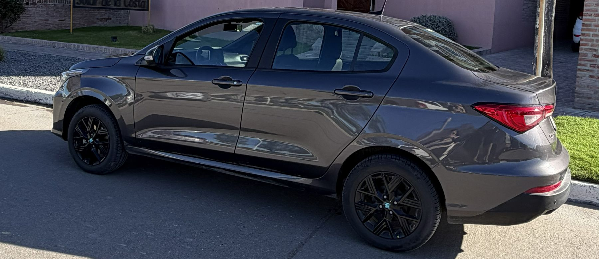

Servicios
Viajes privados, aeropuertos y mensajería en Puerto Madryn, Trelew y alrededores.
Traslados de pasajeros
Viajes privados dentro de Puerto Madryn y hacia Trelew, Rawson y otras localidades. Viajás solo vos o tu grupo, sin paradas para otros pasajeros.
- Te buscamos en tu casa, hotel u oficina
- Viajes de ida, de vuelta o con espera
- Dentro y fuera de la ciudad
Aeropuerto de Puerto Madryn
El Aeropuerto El Tehuelche está a pocos minutos del centro. Coordinamos el horario según tu vuelo para que llegues con tiempo al check-in, o te esperamos a la salida cuando aterrizás.
- Te esperamos en el hall de arribos
- Ayuda con el equipaje
- Horario acordado según tu vuelo
Aeropuerto de Trelew
El Aeropuerto Almirante Zar recibe la mayoría de los vuelos de la zona y está a unos 60 km de Puerto Madryn. Con tu número de vuelo seguimos el arribo, así te esperamos aunque se demore.
- Seguimiento de tu vuelo
- Te esperamos si el vuelo se atrasa
- Viaje directo a Madryn, Trelew o Rawson
Mensajería
Presentamos tu documentación en los organismos públicos de Rawson. La retiramos donde nos digas y la llevamos en mano a mesa de entradas, así vos no tenés que viajar ni hacer la fila.
- Retiramos la documentación en tu casa u oficina
- La presentamos en organismos públicos de Rawson
- Te avisamos cuando quedó presentada
Otros servicios a cotizar
Excursiones, eventos, viajes de larga distancia o traslados para empresas. Contanos qué necesitás y te pasamos un presupuesto.